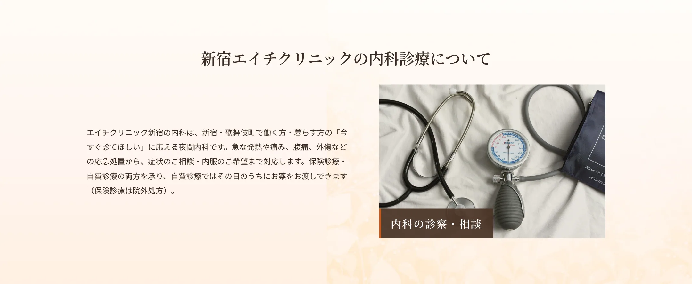
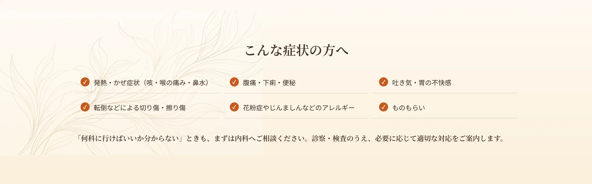
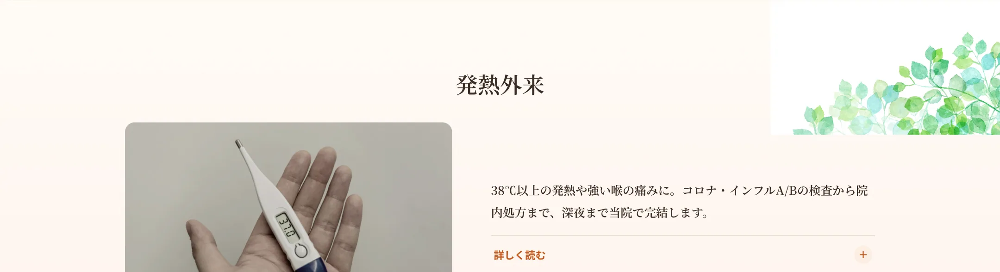
急な発熱やかぜ症状でお困りの方に、新宿エイチクリニックでは発熱外来として診療を行っています。38℃以上の発熱、強い喉の痛み、咳や倦怠感などがある場合、新型コロナウイルスやインフルエンザの可能性も含めて診察し、必要に応じて検査を行います。多くの医療機関が閉まる夜間や土日祝でも、当院は深夜23時30分まで診療しているため、「仕事帰りに熱が出た」「夜になって急に具合が悪くなった」というときの受診先としてご利用いただけます。診察から検査、お薬の院内処方までを当院内で完結できるため、つらい症状のときに何か所も回る必要がありません。発熱のある方はご予約時にその旨をお知らせください。
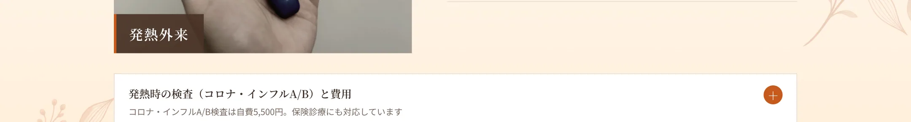
発熱の原因を確認するため、当院では新型コロナウイルス検査とインフルエンザA型・B型の検査を行っています。保険診療の場合、診察料および処方箋料で合計1,100〜5,500円前後となり、検査内容によって費用は異なります。自費診療の場合は、診察・薬代込みで11,000円、コロナ・インフルA/B検査が5,500円です。必要に応じて各種血液検査（1,100〜11,000円）や尿一般検査（1,100円）、診断書（11,000円）、紹介状（5,500円）にも対応します。検査の結果に応じて、その日のうちに解熱鎮痛薬や必要なお薬を院内処方いたします。
発熱や強いかぜ症状がある方は、他の患者様への感染防止のため、ご来院前にLINEまたはお電話で症状をお知らせください。来院時間や動線について個別にご案内する場合があります。当院は完全個室・呼び出し番号制を採用しており、他の患者様との接触を最小限に抑えた環境で受診いただけます。高熱でつらい場合や、強い息苦しさ・意識のもうろうなど重い症状がある場合は、無理に来院せず救急医療機関の受診もご検討ください。
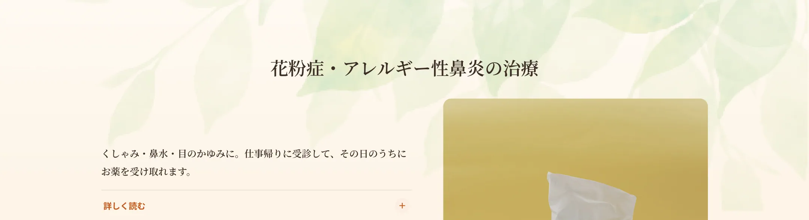
くしゃみ・鼻水・鼻づまり・目のかゆみといった花粉症の症状でお困りの方に、新宿エイチクリニックでは花粉症・アレルギー性鼻炎の治療を行っています。花粉症はスギやヒノキなどの花粉が原因で起こるアレルギー反応で、毎年同じ時期に症状を繰り返すのが特徴です。当院は夜間・土日祝も診療しているため、「日中は仕事で病院に行けないが薬が切れた」という方でも、お仕事帰りに受診してその日のうちにお薬を受け取れます。新宿で夜間に花粉症の薬を処方してもらえるクリニックをお探しの方はご相談ください。
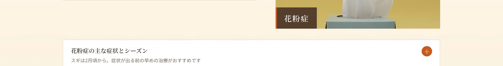
花粉症の代表的な症状は、くしゃみ、水のような鼻水、鼻づまり、目のかゆみ・充血です。人によっては喉のかゆみ、肌のかゆみ、倦怠感を伴うこともあります。日本では2月頃から飛散が始まるスギ花粉、それに続くヒノキ花粉が代表的で、近年は温暖化の影響で飛散開始が早まる傾向があります。症状が出る前や出始めの早い段階から治療を始めると、シーズン中の症状を抑えやすくなります。例年つらい症状が出る方は、早めの受診をおすすめします。
当院では、症状に応じて抗ヒスタミン薬の内服を中心に花粉症治療を行います。処方薬の一例として、かゆみや鼻炎の原因となるヒスタミンの働きを抑えるフェキソフェナジン（アレグラのジェネリック）を取り扱っています。鼻づまりが強い場合は点鼻薬を併用し、症状が特に強い場合には点滴での対応もご相談いただけます。アレルギー症状に対してはステロイドを用いた治療もありますが、単回の治療であれば副作用が問題になることはほとんどありません。お薬は院内処方のため、診察後すぐにお渡しできます。なお、効果や副作用の現れ方には個人差があります。
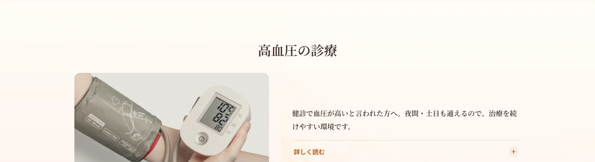
健康診断で血圧が高いと指摘された方、家庭での血圧測定で数値が気になる方に、新宿エイチクリニックでは高血圧の診療を行っています。高血圧は自覚症状が乏しいまま進行することが多く、放置すると重大な病気につながるおそれがあります。当院は深夜23時30分まで・土日祝も診療しているため、忙しくて日中に通院しづらい方でも、継続的に血圧をフォローしやすい環境です。新宿で夜間に高血圧の相談・薬の処方ができるクリニックをお探しの方はご相談ください。
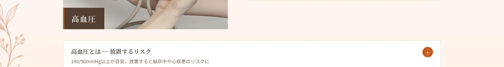
高血圧とは、血管にかかる圧力が慢性的に高い状態を指します。一般に、診察室での血圧が収縮期140mmHg以上または拡張期90mmHg以上の場合に高血圧と診断されます。高血圧は「サイレントキラー」とも呼ばれ、自覚症状がないまま進行し、脳卒中（脳出血・脳梗塞）、心筋梗塞や心不全などの心疾患、腎臓の障害といった命にかかわる合併症のリスクを高めます。早い段階で血圧をコントロールすることが、将来の病気の予防につながります。
当院ではまず血圧測定と問診を行い、必要に応じて血液検査（5,500円）などで全身の状態を確認します。そのうえで、生活習慣の見直しに関するアドバイスを行い、必要な場合は降圧薬による治療を提案します。高血圧の治療は継続が大切なため、お仕事帰りや土日祝にも通院できる当院の診療時間を活かして、無理なく続けていただけます。治療方針は患者様の状態に合わせて決定し、効果や経過を見ながら調整します。気になる症状や持病がある方は、診察時にお知らせください。
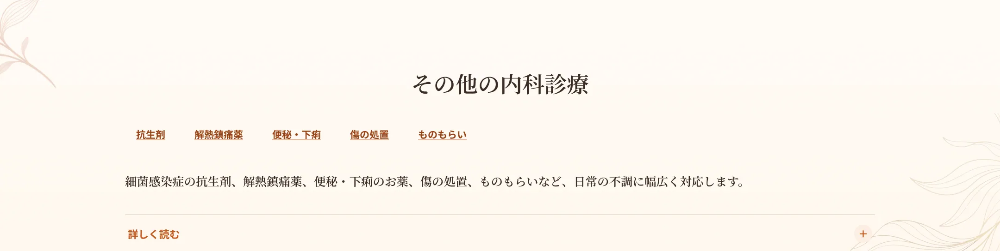
上記のほか、新宿エイチクリニックの内科では幅広い症状に対応しています。細菌感染症に対する抗生剤の処方（ウイルス性のかぜには効きません。正しい用法・用量を守ることが大切です）、発熱や痛みを和らげる解熱鎮痛薬（アセトアミノフェン／ロキソプロフェンなど）の処方、便秘に対する下剤（アローゼン・マグミット）、下痢に対する整腸剤（ミヤBM・ビオスリー）、転倒などによる傷の処置（湿布の処方・縫合止血）、まぶたにできるものもらい（麦粒腫）への抗生剤点眼薬の処方などを行っています。いずれもお薬は院内処方で当日お渡しが可能です。お薬には副作用が生じる場合があり、気になる症状があればご相談ください。
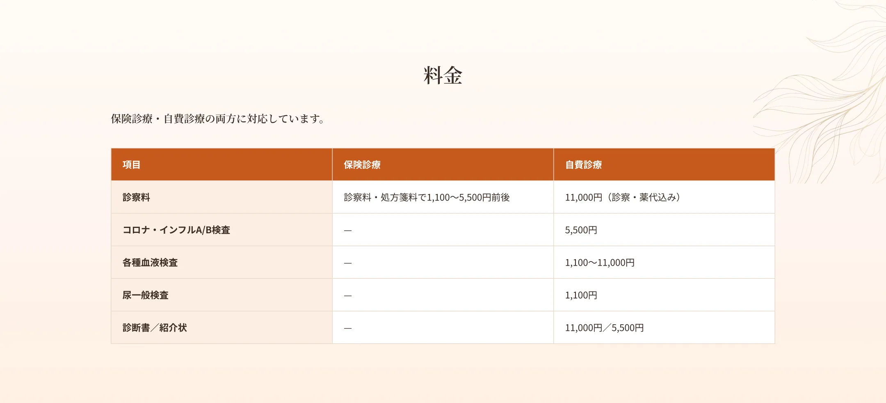
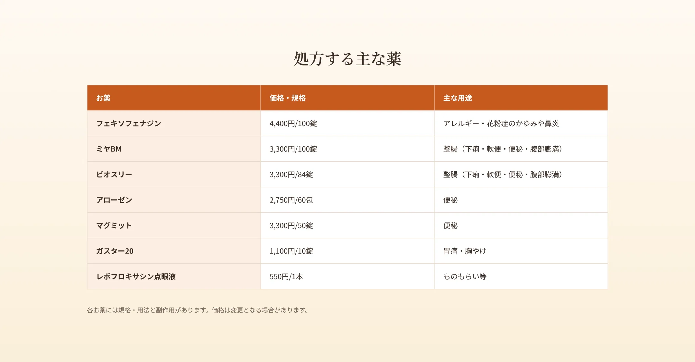
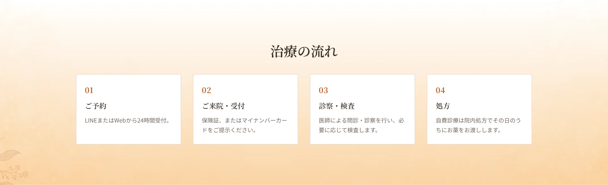
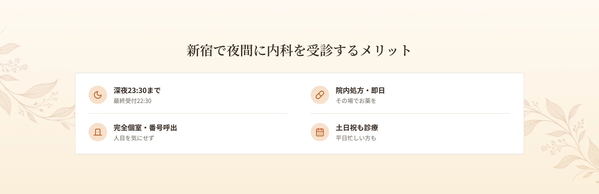
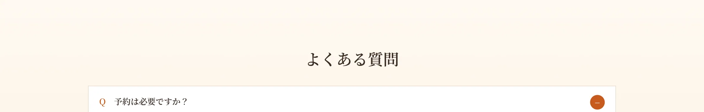
A.完全予約制です。LINEまたはWebから24時間ご予約いただけます。
A.深夜23:30まで（最終受付22:30）診療しています。
A.対応しています。コロナ・インフルA/Bの検査も可能です。ご予約時に発熱の旨をお知らせください。
A.診察のうえ内服や点鼻薬を院内処方します。症状が強い場合は点滴もご相談いただけます。
A.血圧測定・血液検査のうえ継続的な治療に対応します。夜間も通院しやすい環境です。